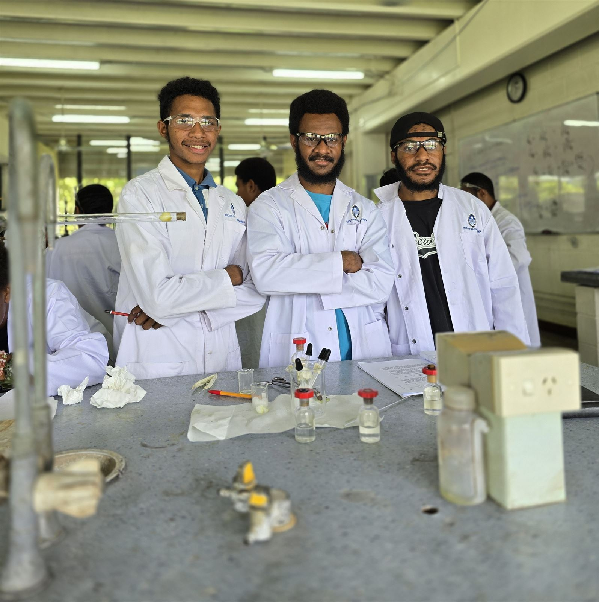
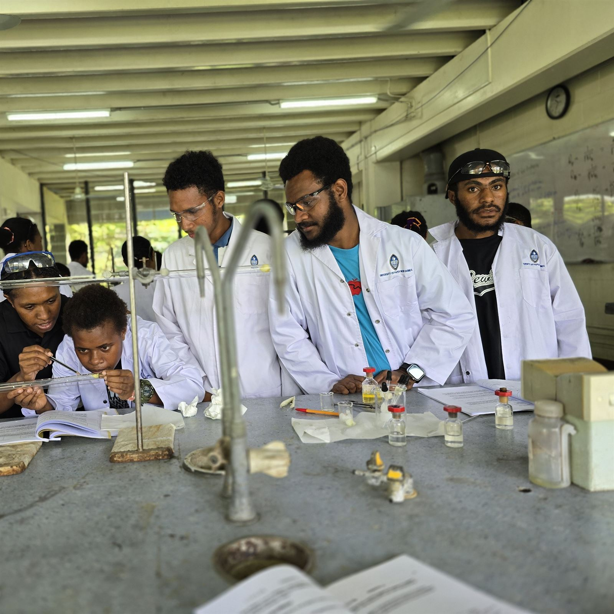
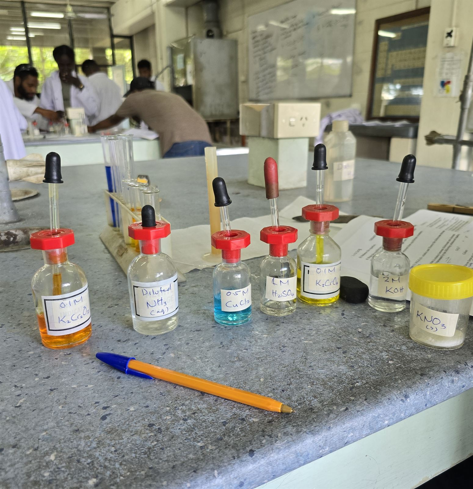
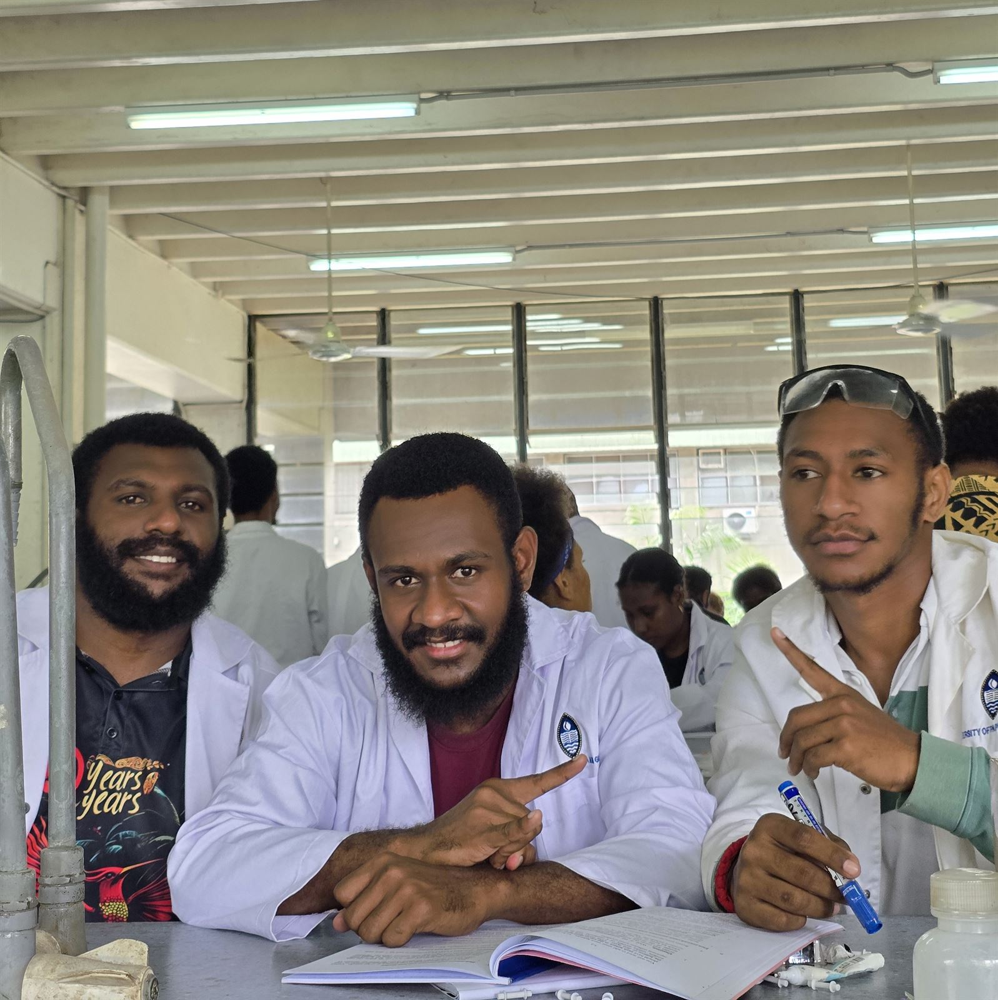
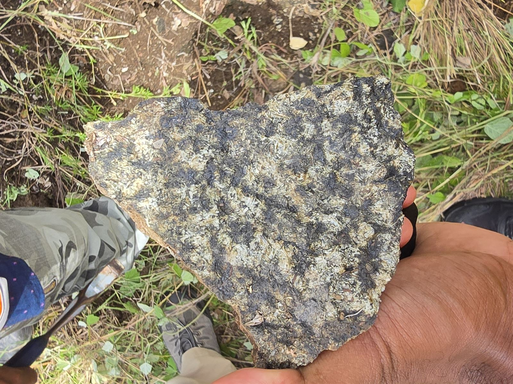
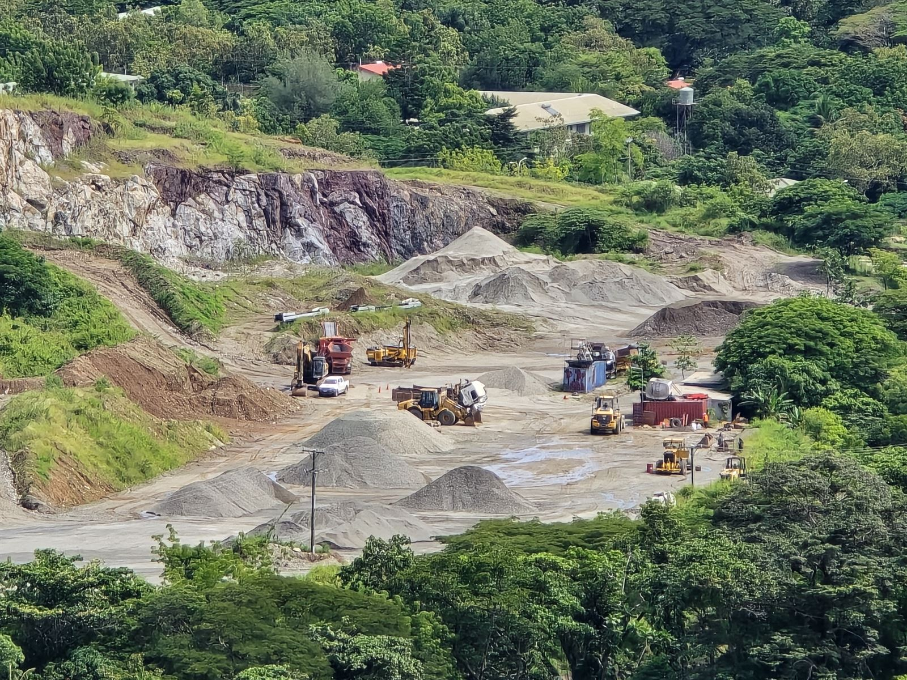
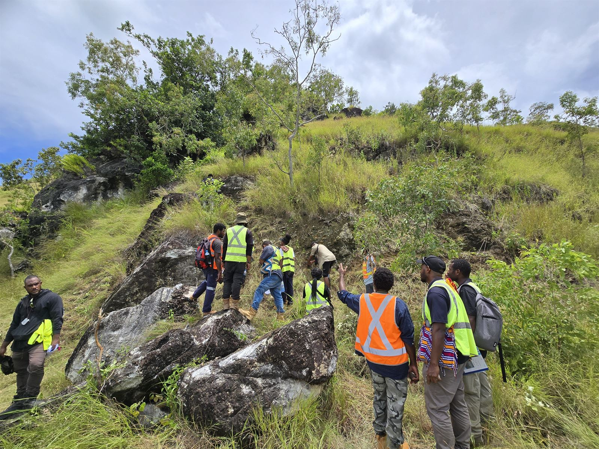
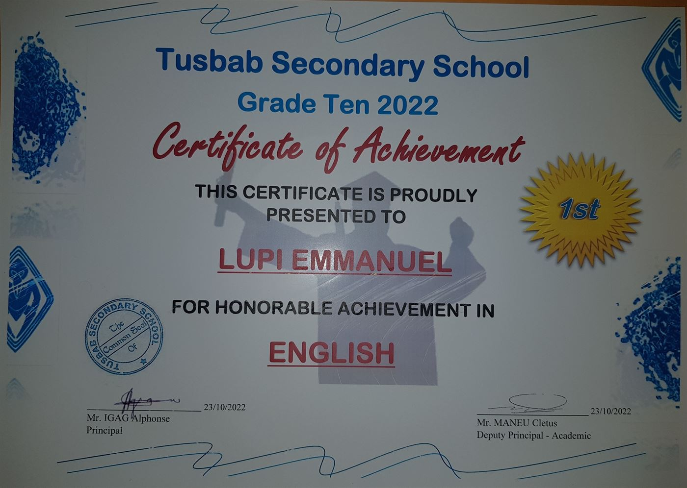
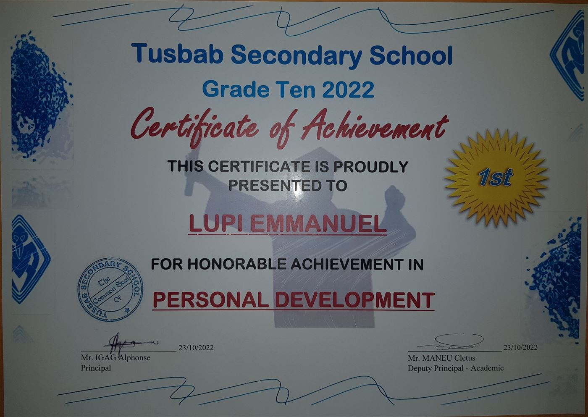
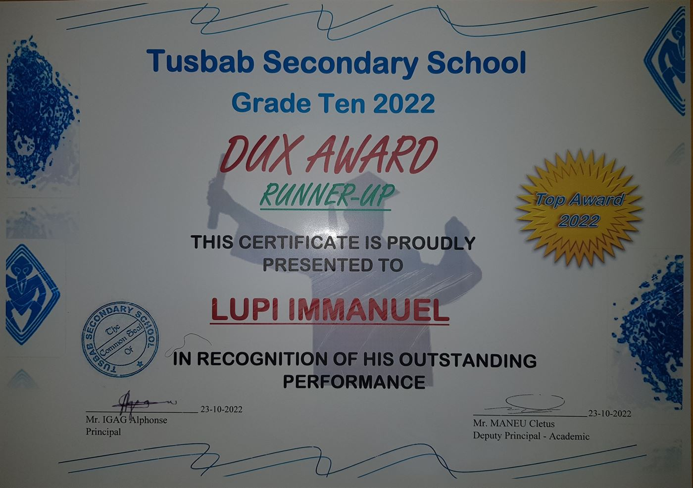

About the Founder
Full-Stack Web Developer | Geology Undergraduate, UPNG
Passionate about science, technology, and building digital solutions using modern web tools and AI.
A timeline of academic milestones.
Achievement: Runner-up Dux Award
Achievement: Runner-up Dux Award (Block Science)
Bachelor of Science in Geology — 2nd Year Undergraduate
I'm fascinated by Earth science — from the formation of minerals to the dynamic processes that shape our planet. Studying geology at UPNG has deepened my curiosity about how the natural world works.
I thrive in laboratory experiments and fieldwork, where theory meets observation. Whether identifying rock samples, analyzing data, or sketching outcrops, hands-on science excites me.
My goal is to combine science with technology — using modern web tools and AI to make scientific knowledge more accessible and useful for communities in Papua New Guinea.
Earth Science
Lab Experiments
Fieldwork
Innovation
The stack I use to build and ship client websites and web apps.
Structure & styling
Front-end interactivity
Back-end APIs
Databases
Secure logins
Email & forms
Version control
Hosting & deployment
A look into my practical work and field experience.









